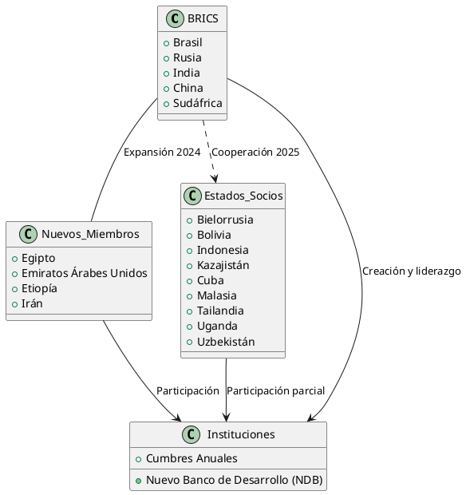

Los BRICS: Origen, Evolución, Actualidad y Potencial en la
Los BRICS: Origen, Evolución, Actualidad y Potencial en la Geoestrategia Global
El bloque BRICS —inicialmente formado por Brasil, Rusia, India, China y Sudáfrica— se ha consolidado como uno de los actores más relevantes en la geoestrategia y geopolítica mundial, desafiando la hegemonía tradicional de Occidente y proponiendo una alternativa de cooperación Sur-Sur. Este artículo explora su origen, evolución, intereses económicos y su situación actual en el escenario global.
Origen y Evolución de los BRICS
El término "BRIC" fue acuñado en 2001 por el economista Jim O'Neill de Goldman Sachs para identificar a Brasil, Rusia, India y China como las principales economías emergentes con potencial de transformar la economía global. En 2006, estos países formalizaron su cooperación, celebrando su primera cumbre en 2009. Sudáfrica se incorporó en 2010, ampliando el grupo a "BRICS".
Desde entonces, los BRICS han celebrado cumbres anuales y han expandido su agenda de cooperación, pasando de lo económico-comercial a lo político, tecnológico y de seguridad. En 2023, el bloque invitó a seis nuevos países; cuatro de ellos —Egipto, Emiratos Árabes Unidos, Etiopía e Irán— se incorporaron formalmente en 2024. Arabia Saudita y Argentina no concretaron su adhesión.
En 2025, los BRICS introdujeron la categoría de "Estados socios", sumando a países como Bielorrusia, Bolivia, Indonesia, Kazajistán, Cuba, Malasia, Tailandia, Uganda y Uzbekistán, ampliando su influencia y representando ya el 51% de la población mundial y el 40% del PIB global en paridad de poder adquisitivo.
Actualidad y Potencial Geoestratégico
Peso Demográfico y Económico
- Los BRICS albergan a más de 3.500 millones de personas, aproximadamente el 45-51% de la población mundial.
- Su economía conjunta supera los 28,5 billones de dólares, alrededor del 28-40% del PIB mundial, dependiendo de la métrica utilizada.
- Controlan el 44% de la producción mundial de petróleo y son actores clave en materias primas estratégicas.
Instituciones y Cooperación
El bloque ha creado instituciones propias, como el Nuevo Banco de Desarrollo (NDB), que financia proyectos de infraestructura y desarrollo en monedas locales, desafiando el dominio del dólar y de instituciones como el Banco Mundial y el FMI. La cooperación se extiende a seguridad, tecnología, salud y cambio climático, con una agenda que busca fortalecer el multilateralismo y la voz del Sur Global.
Intereses Económicos y Estratégicos
- Materias primas: Brasil y Rusia destacan en alimentos, minerales, petróleo y gas; China e India en manufactura y servicios.
- Energía: El bloque, con la reciente incorporación de productores clave, puede influir en los precios globales de la energía.
- Mercado interno: Su enorme base de consumidores y fuerza laboral (más de 1.500 millones de trabajadores) representa un atractivo para la inversión y la innovación.
- Desdolarización: El impulso a transacciones en monedas locales busca reducir la dependencia del dólar y fortalecer la autonomía financiera.
Situación en el Escenario Geoestratégico Global
Los BRICS se han posicionado como contrapeso al G7 y otros bloques occidentales, promoviendo un orden internacional más multipolar y menos centrado en Occidente. Su expansión y apertura a nuevos socios refuerzan su capacidad de negociación y su influencia en temas globales como el comercio, la seguridad energética y la gobernanza internacional.
Sin embargo, el bloque enfrenta desafíos internos por la diversidad de intereses y sistemas políticos, así como por las diferencias económicas entre sus miembros. A pesar de ello, su capacidad de "coopetición" —cooperar y competir simultáneamente— les permite avanzar en áreas de interés común, mientras gestionan sus divergencias.
Diagrama Explicativo (PlantUML)

Referencias
- Wikipedia: BRICS
- Foro Económico Mundial: ¿Qué son y para qué sirven los BRICS?
- Le Grand Continent: Los BRICS se amplían
- BBC Mundo: BRICS, poder e influencia
- BBVA: El auge de los BRICS y su influencia en los mercados financieros